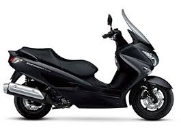
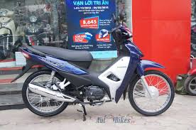
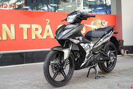
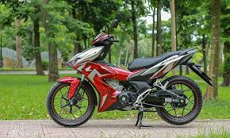
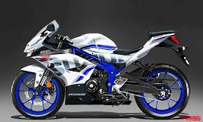
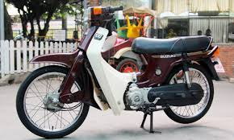

Tin tức xe máy
HONDA
YAMAHA
SUZUKI
xe honda
Honda là ông lớn trong mảng xe máy ở Việt Nam khi chiếm gần 80% thị phần. Mà thường thì, mạnh vì gạo, bạo vì tiền, những hãng bán chạy mặc định có quyền tự quyết số phận của những sản phẩm mà họ bán ra. SH đội giá cả mấy chục triệu vẫn có người mua,
thậm chí xếp hàng đòi xếp lốp.
xe pcx

xem thêm
xe wave

xem thêm
xe yamaha
Cùng với công bố của Cục đăng kiểm về mức tiêu hao nhiên liệu của các mẫu xe máy đang lưu hành trên thị trường Việt Nam, thì nhiều mẫu xe của Yamaha đã gây bất ngờ về động cơ bốc khoẻ của Yamaha lại ngốn ít xăng nhất trong làng xe Việt.
xe Exciter

xem thêm
xe phân khối lớn

xem thêm
quay lại trang chủ
xe suzuki
Vì sao Suzuki để Honda và Yamaha qua mặt tại VN? Cuộc đổ bộ của xe máy Trung Quốc, cùng với việc Honda và Yamaha có những bước đi tích cực là những nguyên nhân khiến Suzuki đi xuống. Cuộc đổ bộ của xe máy Trung Quốc : Best, dòng xe được Trung Quốc
làm nhái nhiều, đã làm mất thương hiệu Suzuki. Miếng mồi béo bở của thị trường xe máy Việt Nam không tránh khỏi sự nhòm ngó của các nhà sản xuất Trung Quốc. Giá rẻ, chất lượng thấp là những điểm dễ nhận thấy của xe máy
ASDF

xem thêm
QWER

xem thêm